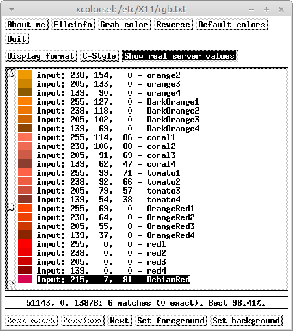

In the beginning there was xcolorsel program:

It hasn't been updated since 1994, & its author says in the README,
that he consider[s] this tool as finished. No further extensions,
bug fixes are planned.
In 2014 I was leaning a new-wave web framework called Angular.js, along with a hot syntactic-sugar language called CoffeeScript. Around that time, the original xcolorsel started producing code dumps, & instead of fixing its archaic code--which was using a heroic Xaw3d widget library--I wrote a simple 'Angular app' to visualise X11 rgb.txt type files, & named it ColorSel.
Angular.js has been deprecated since 2018, if not earlier. Recently, I decided to add another colour list to ColorSel, but started laughing very hard after looking at its source code. The rewrite was long overdue. This time, with no web frameworks, & no syntactic-sugar helpers.